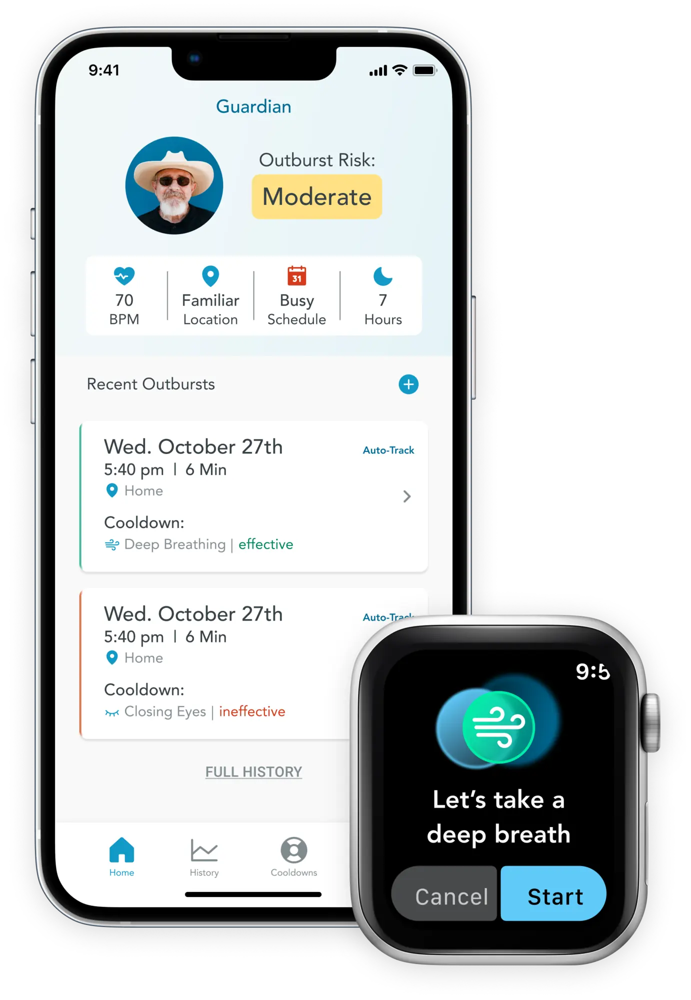
Carnegie Mellon University
Will Wuhlke
Serena Wang
Andy Wilbourn
February - August 2021
Huntington's disease (HD) is an inherited and fatal neurodegenerative disease that causes progressive deterioration of the physical, cognitive and emotional self. A common, and particularly detrimental, cognitive issue is irritability which manifests as abrupt outbursts of anger, straining relationships with family and caregivers.
Guardian uses data-streams from context aware computing to help caregivers manage + mitigate emotional outbursts of patients, increasing quality of life for both.
As a product designer, I defined the opportunity, making the connection between research and a product idea, sketched solutions and collaborated on the final design.
NOTE: This project is based on prior academic work the team worked on. We felt we could define a more targeted opportunity and design a strong product based on the technical feasibility proven in our prior work.
Get in front of possible outbursts with risk assessment and understand the causes
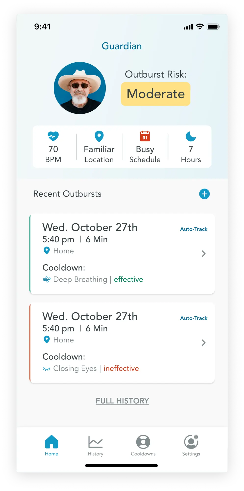
Guardian activates a cool down alert for the patient and alerts the caregiver
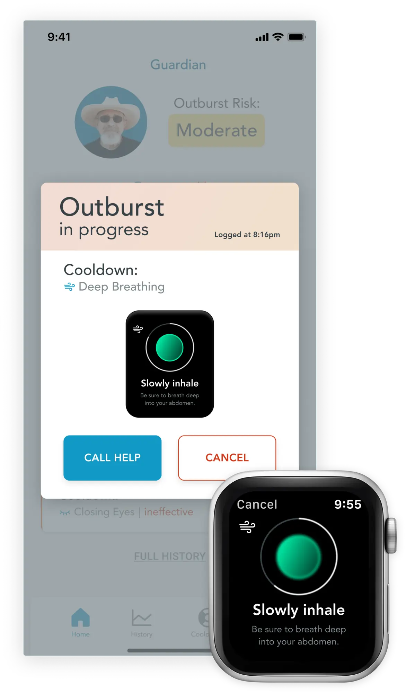
Learn what triggers anger with a detailed outburst history to inform conversations with healthcare professionals and prevent additonal episodes
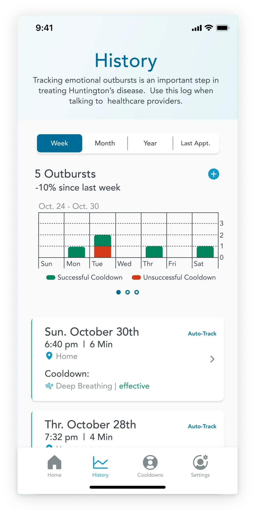
HD has a profound impact on the patient, caregivers, and family involved. To identify an opportunity, we needed to learn more about the context and impact of the disease on these stakeholders across the cycles of the disease.
Huntington's disease (HD) is an inherited and fatal neurodegenerative disease that causes progressive deterioration of the physical, cognitive and emotional self. It impacts nearly 30,000 patients in the United States and leads to severe incapacitation and eventual death 10–40 years after the onset of the disease. Common symptoms are uncontrollable movements, abnormal balance when walking, slurred speech, difficulty swallowing, thinking difficulties, and personality changes. Sadly, there is no cure or medication to slow the progression of the disease.
To learn more about those impacted by the disease and help identify an area of intervention, I mapped the role, relationships, and dependencies of these stakeholders across three phases of the disease. Coming out of this, we identified two areas where we could have an impact.
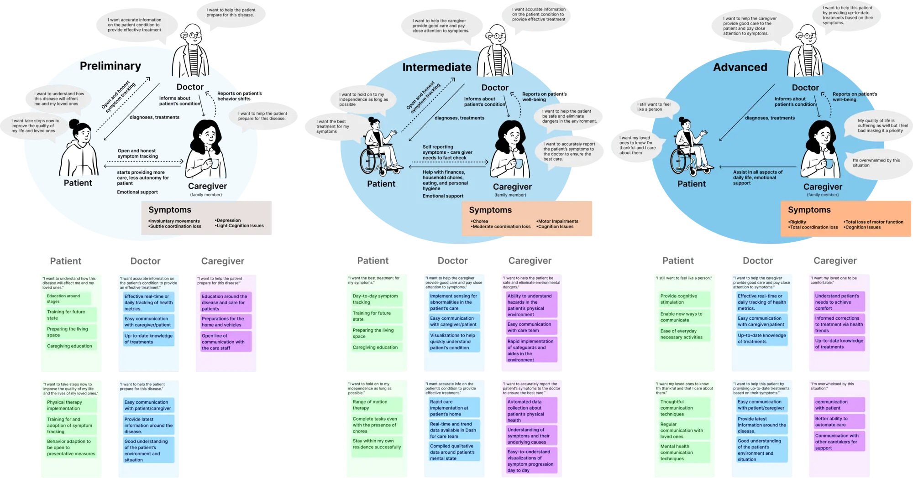
To build a case as to why we should focus on early stage emotional symptoms, the team turned to expert interviews with doctors and extensive secondary research. After analyzing the expert interviews and secondary research, I came to 3 findings that led us to focus on emotional outbursts:
We knew there was an opportunity around early stage emotional outbursts and turned our attention to determining how we could create a product to intervene using data.
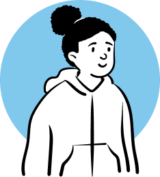
Because this project was based on prior academic work, we limited our focus to data streams we had proven possible in the engineering feasibility exploration. This kept our product grounded in technical feasibility and allowed the team to narrow our focus of possible interventions.
Our next step was modeling the flow of an emotional outburst and ways our product could intervene to help.
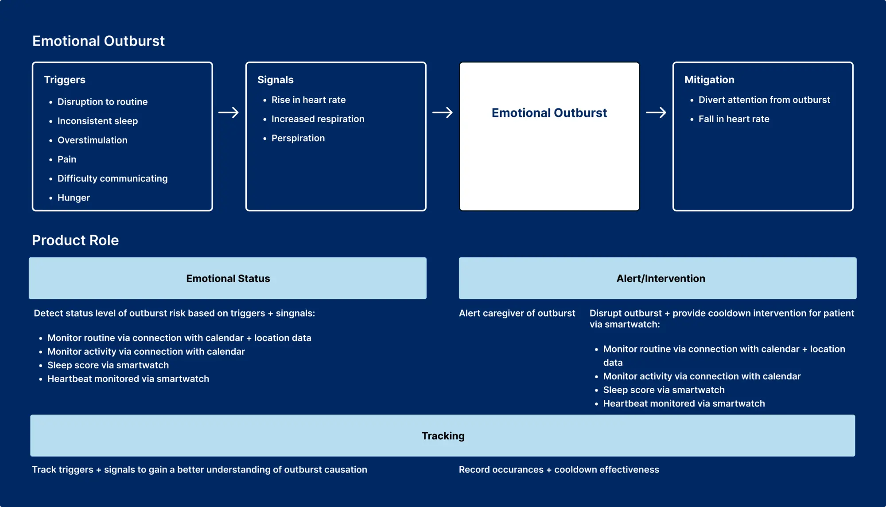
With monitoring outburst potential, intervening to help mitigate outbursts, and tracking as our primary goals of the product, we determined that a multimodal, smartphone + smartwatch app was the best direction.
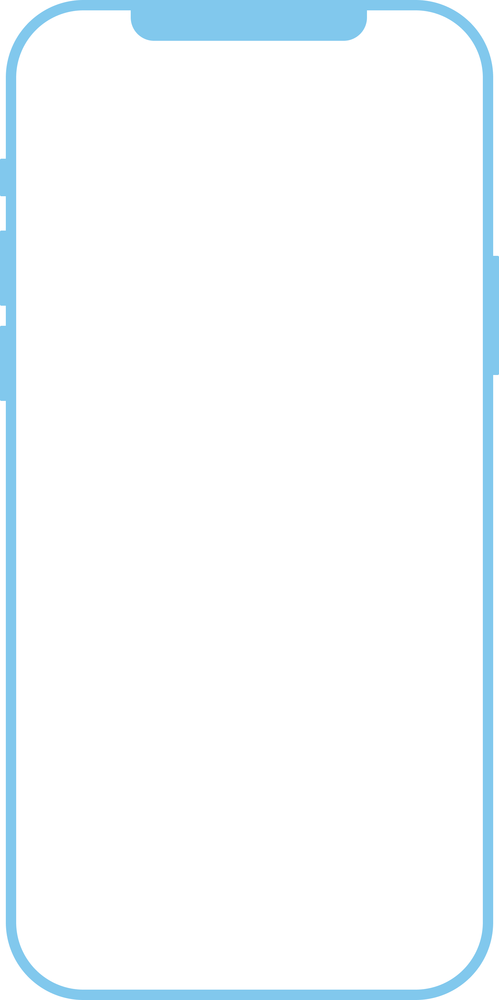
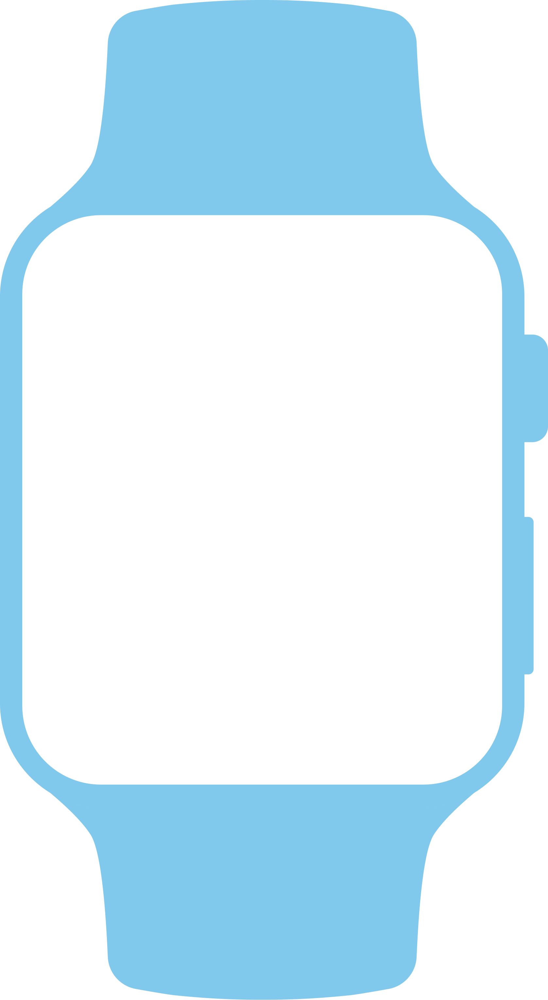
With more definition around our opportunity and how we planned to intervene, we directed our focus on building the experience.
We defined goals for both the phone + watch app and quickly sketched screen flows to meet those goals. By moving quickly and designing in parallel the team had a variety of options and approaches to analyze and decide upon.
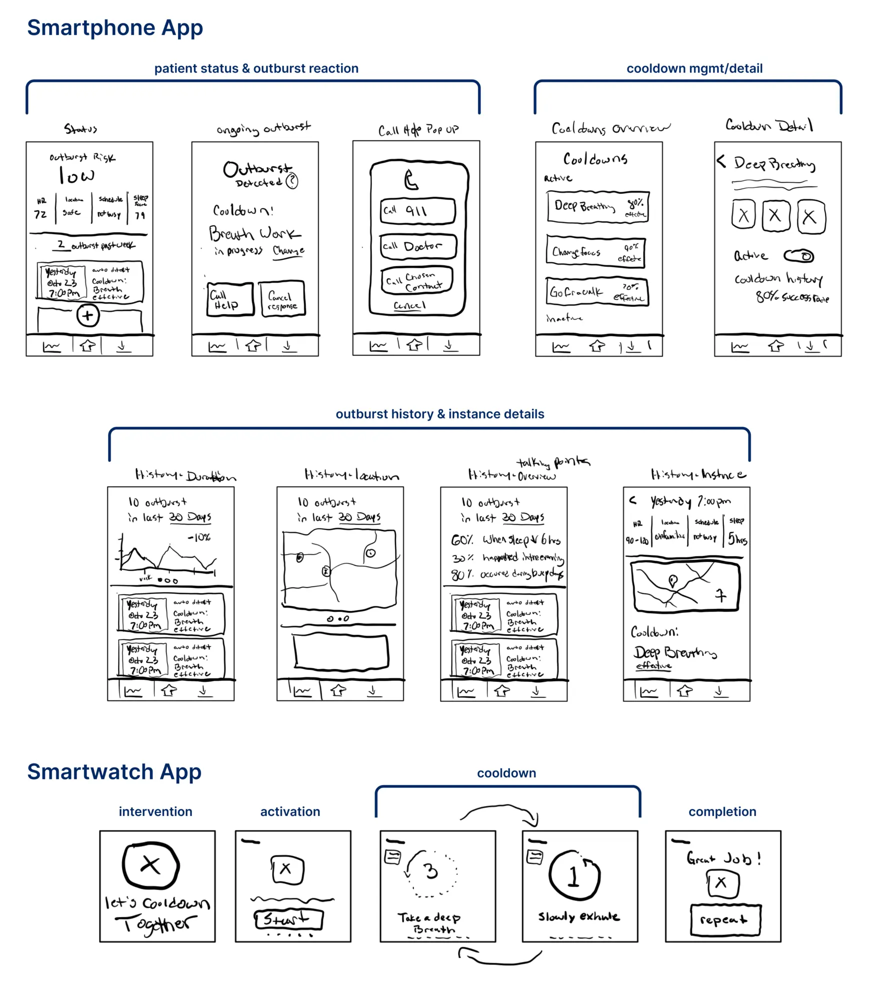
Building on the above flows, we approached the design of the wireframes with the goal of making information retrieval as simple and easy as possible for caregivers. These wireframes helped us stress test the experience quickly and identify gaps to fill.
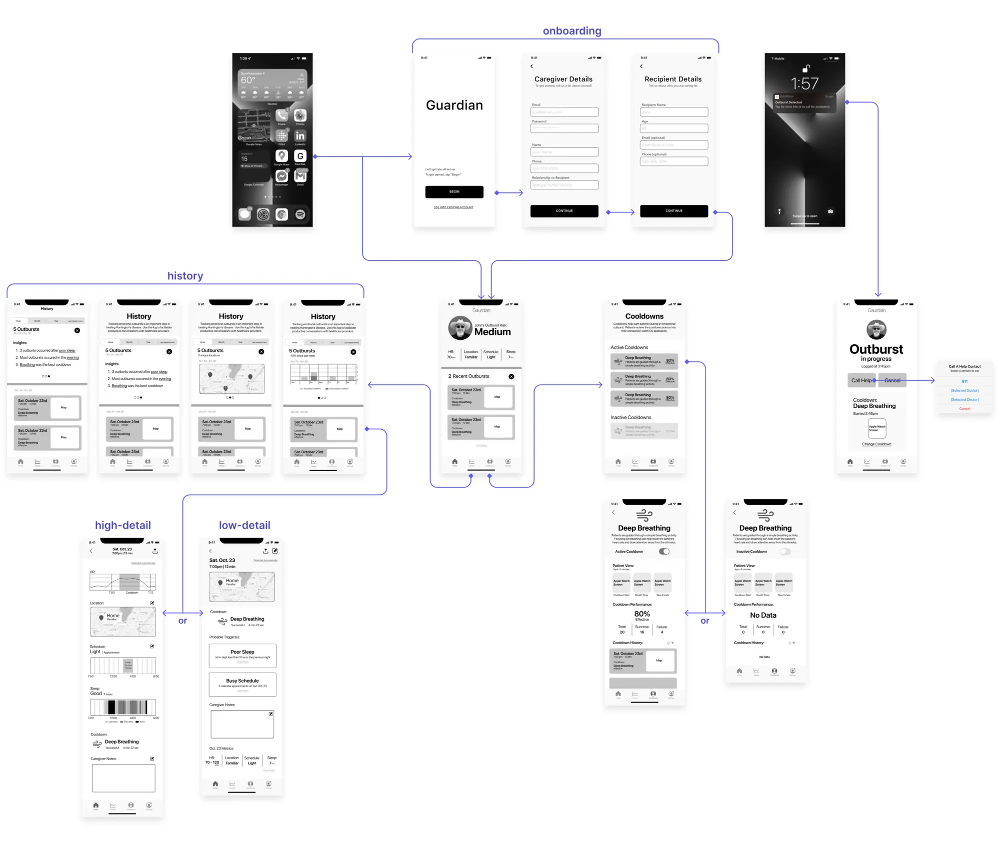
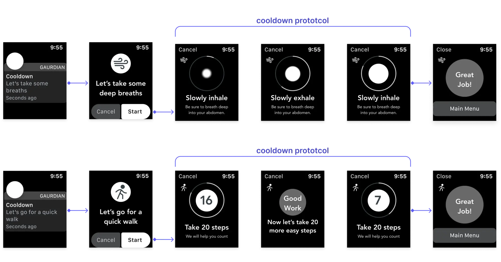
Caregivers can view the risk of an outburst for the patient, potential triggers, recent outburst events, and have the ability to manually log an outburst if needed.
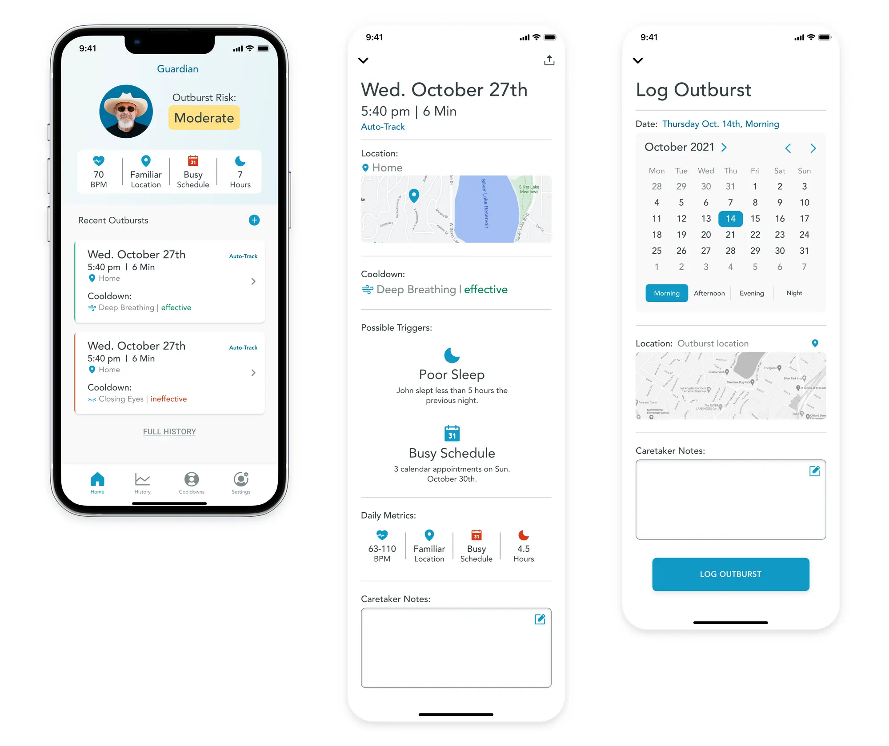
Caregivers are prompted with a notification that the app has detected an outburst occurring, informs them which cooldown protocol was initiated, and presents them with an option to call for emergency help. The app intentionally limits functionality to narrow focus on patient response.
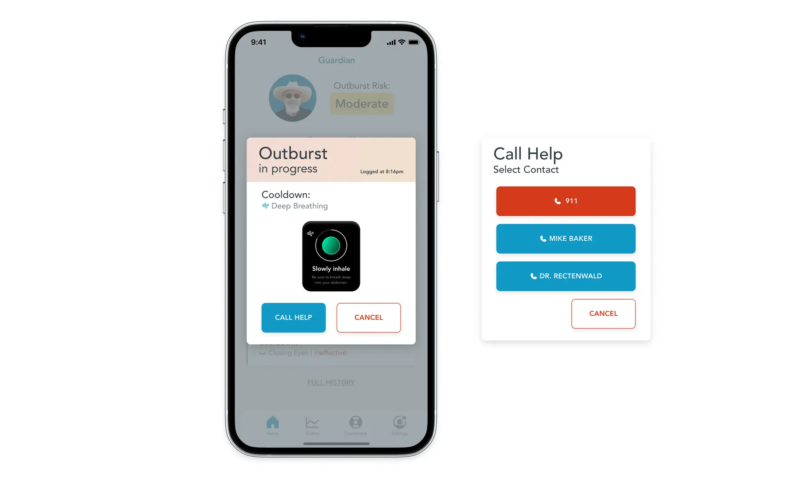
Caregivers can access a history of patient outbursts, helping them mitigate future episodes and have data to reference with healthcare professionals. The history outlines recent outbursts, cooldown effectiveness, and maps the location of outbursts.
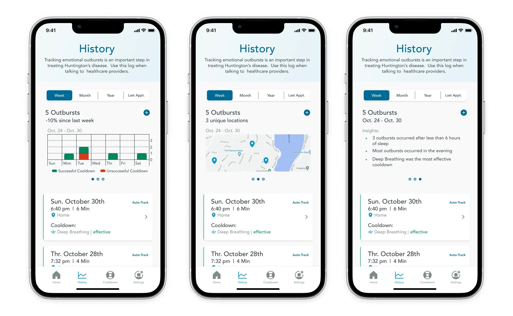
Caregivers can get an overview of each cooldown intervention, select which interventions are activated, choose a specific location or time for an intervention and see a performance history.
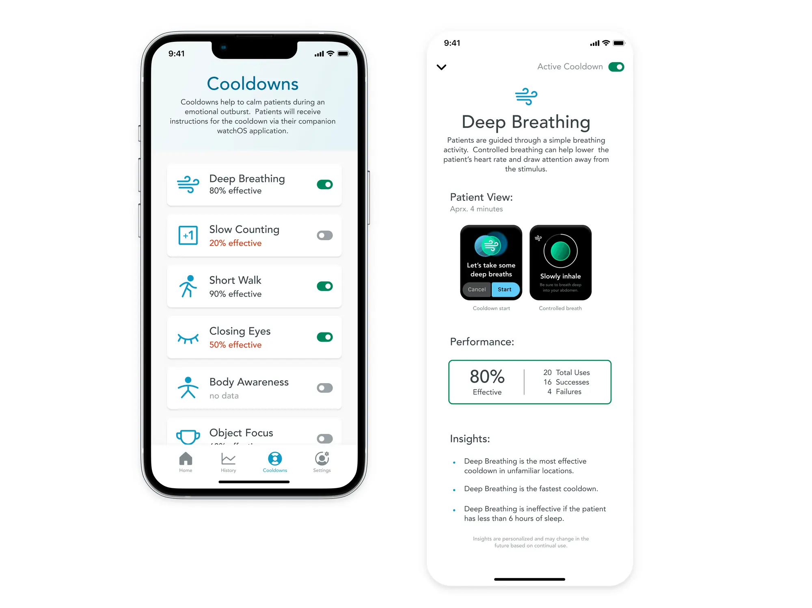
During an outburst, patients are prompted with a cooldown intervention via their smartwatch. The interface is simple, visual, and walks the patient through the experience with supportive copy.
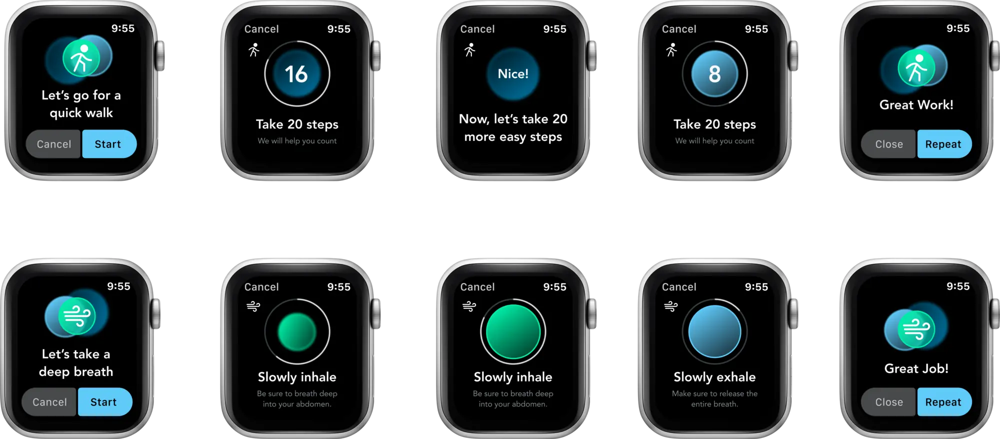